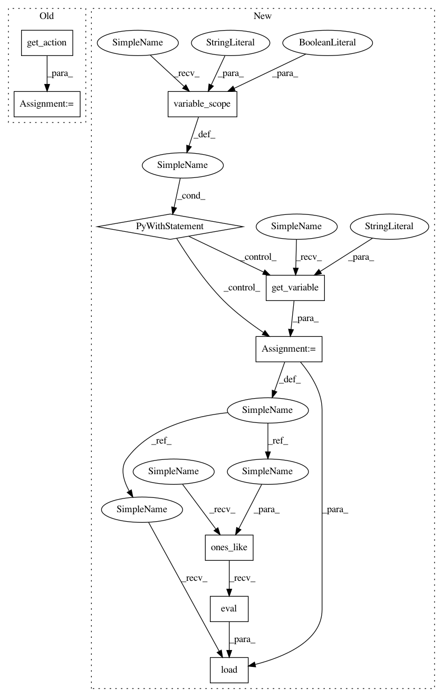

3a3bdf17ca08052309016bdfa481a58c70112abd,tests/garage/tf/policies/test_gaussian_mlp_policy_with_model.py,TestGaussianMLPPolicyWithModel,test_is_pickleable,#TestGaussianMLPPolicyWithModel#Any#Any#,93
Before Change
p = pickle.dumps(policy)
with tf.Session(graph=tf.Graph()):
policy_pickled = pickle.loads(p)
action2, prob2 = policy_pickled.get_action(obs)
assert env.action_space.contains(action1)
assert np.array_equal(action1, action2)
assert np.array_equal(prob1["mean"], prob2["mean"])
After Change
obs, _, _, _ = env.step(1)
obs_dim = env.spec.observation_space.flat_dim
with tf.variable_scope(
"GaussianMLPPolicyWithModel/GaussianMLPModel", reuse=True):
return_var = tf.get_variable("return_var")
// assign it to all one
return_var.load(tf.ones_like(return_var).eval())
output1 = self.sess.run(
policy.model.outputs[:-1],
feed_dict={policy.model.input: [obs.flatten()]})
In pattern: SUPERPATTERN
Frequency: 3
Non-data size: 9
Instances
Project Name: rlworkgroup/garage
Commit Name: 3a3bdf17ca08052309016bdfa481a58c70112abd
Time: 2019-04-26
Author: ahtsans@gmail.com
File Name: tests/garage/tf/policies/test_gaussian_mlp_policy_with_model.py
Class Name: TestGaussianMLPPolicyWithModel
Method Name: test_is_pickleable
Project Name: rlworkgroup/garage
Commit Name: 3a3bdf17ca08052309016bdfa481a58c70112abd
Time: 2019-04-26
Author: ahtsans@gmail.com
File Name: tests/garage/tf/policies/test_deterministic_mlp_policy_with_model.py
Class Name: TestDeterministicMLPPolicyWithModel
Method Name: test_is_pickleable
Project Name: rlworkgroup/garage
Commit Name: 3a3bdf17ca08052309016bdfa481a58c70112abd
Time: 2019-04-26
Author: ahtsans@gmail.com
File Name: tests/garage/tf/policies/test_categorical_mlp_policy_with_model.py
Class Name: TestCategoricalMLPPolicyWithModel
Method Name: test_is_pickleable
Project Name: rlworkgroup/garage
Commit Name: 3a3bdf17ca08052309016bdfa481a58c70112abd
Time: 2019-04-26
Author: ahtsans@gmail.com
File Name: tests/garage/tf/policies/test_gaussian_mlp_policy_with_model.py
Class Name: TestGaussianMLPPolicyWithModel
Method Name: test_is_pickleable